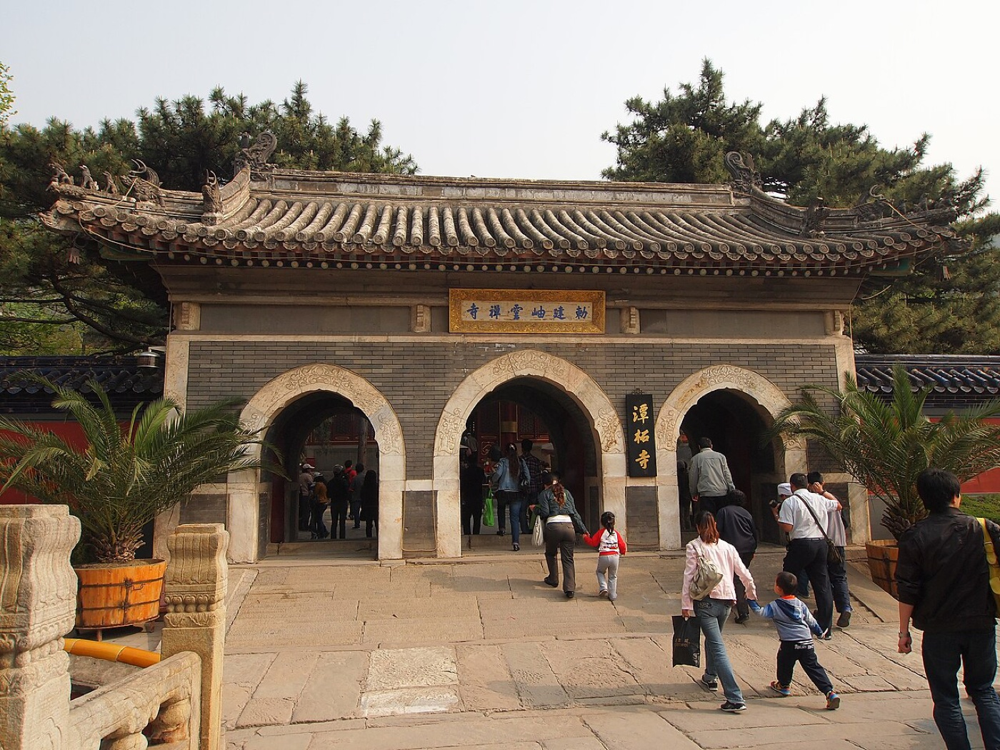
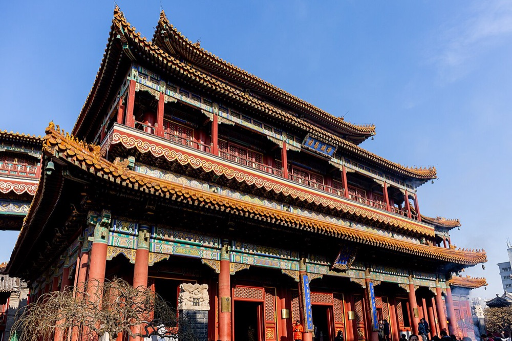
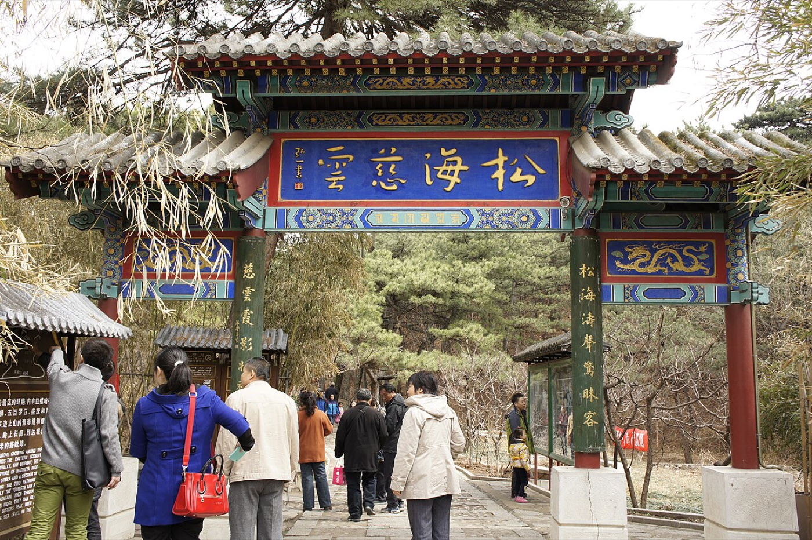

说说你的想法
心愿、日期、同行人或出行偏好，都可以用自己的话告诉向导。出发地可以稍后补充。

MORE THAN A DESTINATION
有人希望离家近一点，有人愿意专程前往，也有人想先了解清楚，再决定是否出发。说出你在意的事，向导会根据现有资料帮你整理选择。
A THOUGHTFUL JOURNEY
你可以从心愿、条件，或者一座已经想去的寺庙开始。每一步都允许继续追问。
心愿、日期、同行人或出行偏好，都可以用自己的话告诉向导。出发地可以稍后补充。
查看候选的习俗线索、环境和体力要求，理解推荐理由以及需要权衡的地方。
了解已收录的开放规则和预约购票指引，临行前再核实官方最新安排。

北京 · 雍和宫IN THE DETAILS
在候选资料里，看看场所与哪些习俗有关、环境是什么样，以及参访时可能需要注意什么。对你关心的部分，继续问下去。
习俗与个人分享是理解地方文化的线索。
它们不代表祈愿结果。
KNOW BEFORE YOU GO
场所资料保留已有来源，民俗说法与场所事实分开呈现。可选的公开搜索能够提供分享摘要和原文链接，结果取决于配置与实际搜索。
目前聚焦北京；开放时间、预约要求可能变化。指定日期的检查依据已收录的常规规则，具体安排仍需向官方核实。
不承诺祈愿效果，不提供实时余票或代购。涉及健康和求子的内容仅作民俗文化参考，不代替专业医疗判断。
